Overview
The main user interface of LesserEvil is split into three major components:
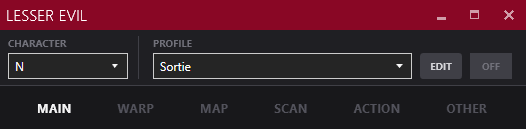
- CHARACTER - pick and switch between who is the focused character.
- PROFILE - load a saved profile. EDIT opens the profile editor; OFF disables the active profile.
- FEATURE TABS - split into multiple feature tabs to organize related features.
Feature Tabs
LesserEvil is split into multple tabs to better organize its features.
- MAIN - main tab handling character specific features like visibility filters and speed modifiers.
- WARP - multiple different warp functionality based on entity, player, point, etc.
- MAP - visual map with live overlays and map warp functionality.
- SCAN - scan for specific entities ingame and optionally warp to or track them.
SCAN functionality requires the LesserEvil companion addon to be loaded.
- ACTION - create actions that can be executed ingame and bind them to hotkeys.
- OTHER - handles configuration settings and other settings.
Main
Main control panel for the focused character. Controls status, visibility filters, speed.
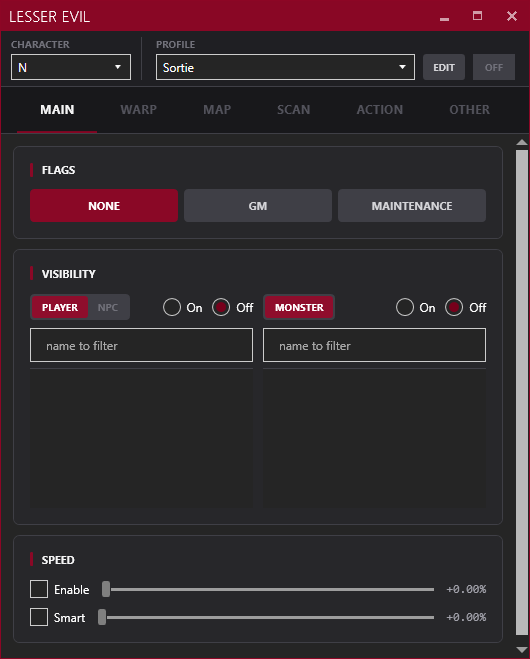
Maintenance Mode
Maintenance Mode allows you to ignore all collision and clipping, allowing you to run through walls or terrain.
Toggle on and off with by clicking the button.
Visibility Filtering
Hide other entities locally:
- PLAYER / NPC / MOB - On/Off toggles per category.
- Name filter - type a name to selectively hide only matching entities. Supports partial names.
Visibility changes are local to your client only.
Speed
Adjusts your character's movement speed.
- Enable
- Toggle for normal speed modification. The slider sets the percent boost above the base FFXI movement speed.
- Smart (Smart Flee)
- Smart flee disables the speed modifier when an untrusted player is detected within ~50 yalms. Utilizes a whitelist for to not turn it off around trusted players.
The Smart panel has a WHITELIST for additional trusted names and three Keep speed active during toggles (Chocobo, Flee, Bind) that override the safety drop while those statuses are active.
All characters currently attached to LesserEvil are autoamtically whitelisted and will not deactivate Smart Flee.
Compact mode
The window can collapse to a smaller UI - Toggle it by clicking the Compact button at the top right.
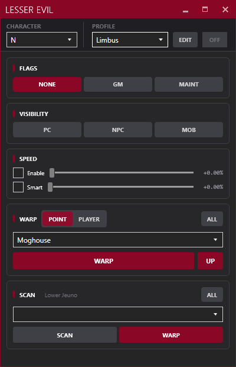
Profiles
Preset configurations that bundle speed, visibility, and filter settings of multiple characters. Activated manually, on a hotkey, or automatically when entering a zone.
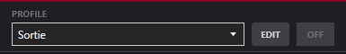
Overview
A profile is a named bundle of per-character overrides. One profile can carry settings for multiple characters at once.
For each character a profile can override:
- Speed Enabled + Speed Amount
- Smart Speed + Smart Amount
- Hide Players / NPCs / Mobs
- Visibility Filter - list of names to hide selectively
User Interface
The profile bar can be found at the top of the LesserEvil, beside the character dropdown, with the following functions:
- PROFILE SELECTOR - pick a saved profile from the dropdown to load it on the focused character.
- EDIT - opens the profile editor window for the selected profile.
- ON/OFF - enables/disables the currently selected profile.
Profile Editor
Click EDIT next to the profile dropdown (or + NEW PROFILE from the manage view) to open the editor.
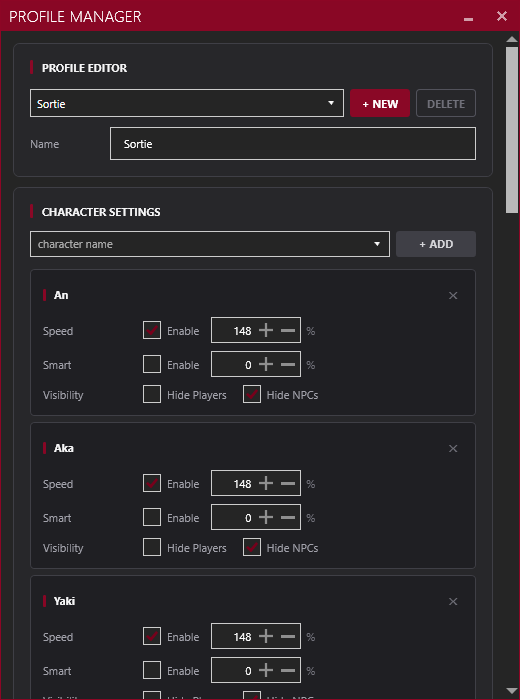
- Name
- Name of the profile. Used for selection in the dropdown and hotkey/action references.
- Character Settings
- Add any attached character to the profile and configure their settings.
- Auto-load zones
- Define zones that should auto-activate this profile on entry. The profile deactivates automatically when you leave the zone (unless Keep Profiles On While Zoning is enabled in Other).
- Scoped Hotkeys
- The editor lists every hotkey scoped to this profile so you can see at a glance which actions are gated by it. Add new ones from the Actions & Hotkeys tab with Active when set to the profile name.
Activating Profiles
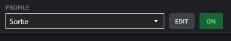
Manual - select a profile from the dropdown, then click the ON/OFF button to toggle activation.
Hotkey-driven - use the Load & Activate action (Profile category) bound to a key combo. Or Toggle Profile On/Off to toggle the currently selected profile on/off.
Zone Auto-load - list a zone in the profile's auto-load zones and entering that zone activates the profile automatically. Leaving it deactivates it.
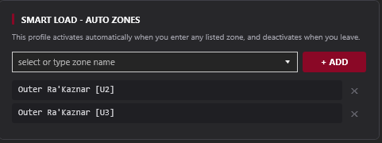
Hotkey scoping
On the Actions & Hotkeys tab, every hotkey can be bound to "Any profile" (default) or to a specific profile. Profile-scoped hotkeys only fire while that exact profile is active.
Keeping Profiles On While Zoning
By default, the active profile is deactivated whenever any of its included characters changes zones for safety.
This behavior can be changed by toggling Keep Profiles On While Zoning in Other to disable the auto-deactivation if you'd rather profiles persist across zones until you turn them off manually.
Raw Profile data is stored in config/profiles.json.
Warp
Save and manage warp points, jump between characters, warp to targetted entities, and nudge for micropositioning.
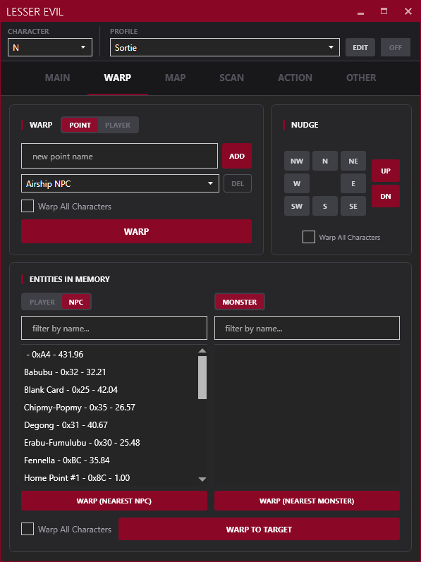
Point/Player Warp
The WARP section contains two primary modes:
- POINT
- Warp to a saved point in the current zone. Points are organized per zone-name.
- PLAYER
- Warp to another attached character's current position.
Saving Warp Points
Stand at a location in-game, then save it by name by clicking ADD in the WARP section. Points are stored in
config/saved.points.json.
Points are matched by zone name, so the same point name in two different zones is treated as two distinct entries.
Position Nudge
Provides a d-pad style interface for allowing the user to make micro-adjustments to their character(s) position.
Entity List
Provides a live list of entities in memory (50y radius around the player) This is split up into two lists:
- PLAYER / NPC
- Lists the current PLAYER / NPC entities in the immediate vicinity. Swap between player/npc by clicking on the respective tabs.
- MONSTER
- Lists the current mob/monster entities in the immediate vicinity.
Warp To Entity
LesserEvil allows multiple ways to warp to entities in memory:
- WARP (NEAREST PC/NPC) - warps to the nearest player character.
- WARP (NEAREST MONSTER) - warps to the nearest living monster. Skips dead monsters.
- WARP TO TARGET - warps to the entity the player has currently targetted, if any.
Warp All
The Warp All toggle allows any warp function to simultaneously warp every attached character that is in the active character's zone with a single command.
- Filters by zone - only same-zone characters get warped.
- Honors the Warp Group opt-in list in Other: any unchecked character is skipped.
CLI Commands
Warps can also be triggered straight from the FFXI chat box similar to the legacy Tako cli command //pt goto.
A single //le goto
command warps to either your current target, a saved warp point, or another attached
character, gated to your current zone.
| Command | Behavior |
|---|---|
//le goto <warp point> |
Warp the current character to a saved warp point in your current zone. Multi-word names work as typed (e.g. //le goto Boss Room). |
//le goto <character name> |
Warp to another LesserEvil-attached character who is in your current zone. If a name matches both an attached character and a saved point in your zone, the character takes priority. |
//le goto <t> |
Warp to your current target's position. |
//le goto <target> all |
Append all to warp every attached character that is in the same zone to that destination (point, character, or target). |
//le goto works even without the LesserEvil Windower addon - the
command is read directly from the Windower console. Warps still respect
Warp Guard.
Warp Guard
When the warp guard blocks a warp (because an untrusted player is within ~50 yalms of the warping character), an amber WARP BLOCKED banner appears temporarily at the top of the tab listing which character was blocked.
Map
Zone map with live overlays for player position, surrounding entities, saved warp points, and tracking guide-lines.
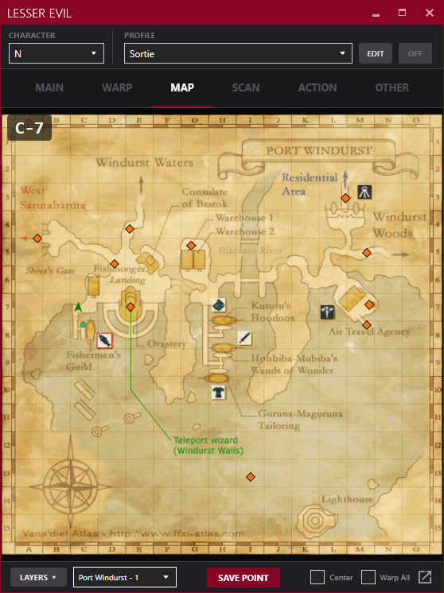
Navigation
- Zoom
- Use the mouse wheel to zoom in/out 0.25 increments up to 4×.
- Pan
- Click and drag on the map to pan when zoomed in.
- Click to warp
- Click on a position on the map to warp your character to the location after a confirmation prompt.
Because the map overlay is a 2D image, height-based positioning is inconsistent when warping this way.
If you choose to use this function, you may warp under the ground for example.
Please exercise caution when using this.
Live Overlays
Player - a rotating arrow showing your current position and facing direction.
Player Coordinates - top-left badge shows your in-game grid position on the map (e.g. F-8).
Radar Circle - a faint dashed ring marks the ~50-yalm entity-detection bubble around your character - the limit of where live entity data is available.
Entity Icons - Each entity renders as a small colored dot. Hover any dot for a panel showing its name, type, HP, claim status, and distance.
- PC
- MOB
- NPC
- Warp Point
Toggle visibility for each type in the bottom bar.
Floor Selector
Multi-floor zones (Sortie, Limbus, etc.) auto-switch the displayed floor based on your character's vertical position.
The strip on the right shows thumbnails of every floor; clicking on one temporarily sets the view to that floor.
Warp Points
Saved warp points for the current zone are plotted on the map overlay, with the following functions:
- Left-click a warp point - warps to its exact saved coordinates.
- Hover a warp point - shows the name in the bottom-right info panel.
- WARP checkbox in the bottom bar toggles warp point visibility on the map.
Same underlying data as the Warp tab's POINT-mode dropdown.
Saving Warp Points
The SAVE WARP POINT button in the bottom bar captures your character's current position and saves it as a new warp point. After defining a name for the point, the new point will appear as an orange diamond on the map immediately.
Tracking
When entities are tracked from the SCAN tab, each one renders on the map with a colored guide-line to its location.
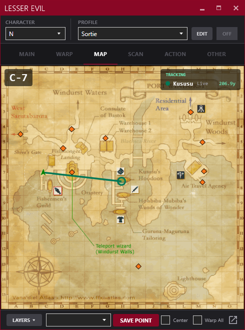
- The line updates in real-time when the entity is in your memory range (50y).
- When outside 50y, it falls back to the last scan result, refreshed every 60 seconds.
- Top-right HUD lists every tracked entity with status, distance, and a color swatch.
- Clicking a tracked entity on the map allows you to warp directly to its position.
Full tracking workflow can be found in Scan & Track.
Pop-out Maps
Click the ↗ icon in the bottom right of the MAP section to open a new resizable window bound to the current character.
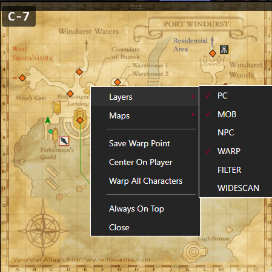
Bottom Bar Reference
- PC / MOB / NPC / WARP - visibility checkboxes.
- SAVE WARP POINT - captures your full coordinates and saves them as a named warp point on this zone's map.
- Warp All - applies the next warp to every attached character in the active character's zone (same rule as the WARP tab's ALL toggle).
- ↗ - open an independent pop-out map for the current character.
Scan & Track
Inspect every entity in a zone, scan for and warp to an entity on demand, and track entities across the map.
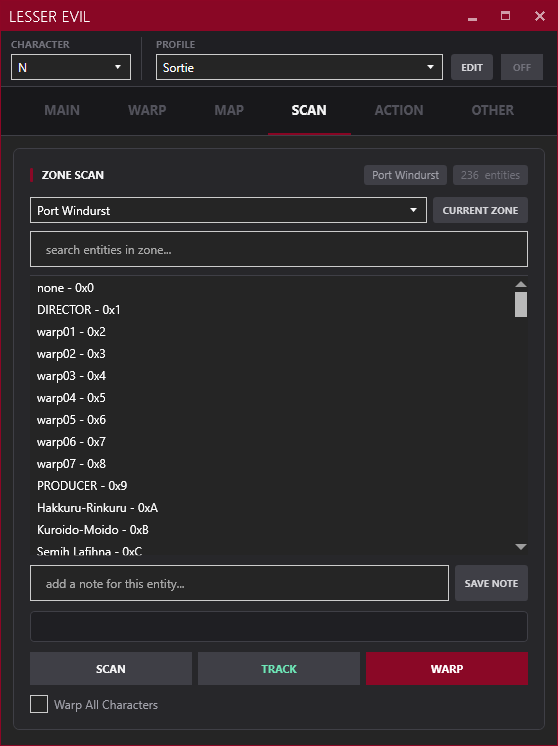
Addon Requirements
The SCAN tab requires the LesserEvil Windower addon to be
loaded to function. The connection state is shown when first navigating to the tab:
- LOAD ADDON - sends
//lua load LesserEvilto the focused character. - CHECK CONNECTIVITY - re-pings the addon to verify the connection if the addon is already loaded.
You can also enable Load Windower Addon On Startup in Other to auto-load on every attach.
Zone Scan
Pick a zone from the dropdown to load every named entity slot. The current zone is highlighted by the badge to the right.
- CURRENT ZONE - jumps the dropdown back to your character's zone.
- Filter box - fuzzy search the entity list by name.
- Entity List - each row shows the name and ID of the entity, with optional user notes on the right.
- Double-click a row - issues a SCAN for that entity.
- Optional Zone Inspector - selecting zones other than the user's current zone allows users to view entity lists for other zones.
When viewing a zone other than the player's current zone, SCAN & TRACK functions are disabled.
Actions
- SCAN
- Sends a request for the selected entity's position data. The result panel shows coordinates if found or "Unable to locate entity" when the entity could not be found.
- TRACK / UNTRACK
- Adds or removes the selected entity from the tracking set. The button label flips based on whether the row is currently being tracked.
- WARP
- Warps to the entity's last scan result. If no scan has happened yet, it scans first then warps automatically.
Entity Notes
Each entity can have a user defined note attached to it. Select a row, type
in the note box, click SAVE NOTE.
Saved notes are displayed to the right of an entity on the list.
Tracking
Tracking periodically scans for an entity's coordinates and displays them on the Map tab when found.
- Multiple Target Support
- Track as many entities as you want at once.
- Multiple Character Support
- Each tracked target is owned by the character that started it. Each character's map only shows its own targets, and scans are routed via the owning character.
- Notification banner
- An emerald banner appears at the top of the SCAN tab when any entity is tracked, listing the count or single name and a STOP button to clear all of your character's tracks.
- List highlighting
- Tracked entities in the entity list are prefixed with
>>so they're easy to find. Only your own tracks show the prefix. - Map HUD
- Top-right of the map lists every tracked entity with a color swatch matching its line, the name, status (Live / Found / Searching…), and current distance.
Actions & Hotkeys
Create actions that range from LesserEvil native features to chat inputs and windower commands ingame. Bind a keyboard shortcut to a sequence of actions.
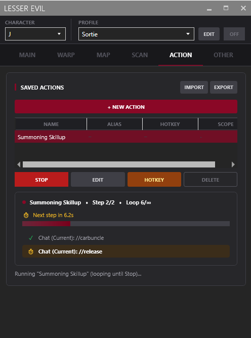
Action Basics
Actions are simple inputs that can be composed and saved within LesserEvil. Most LesserEvil features can be made into actions, and actions can be chained to create sequences.
Available Actions
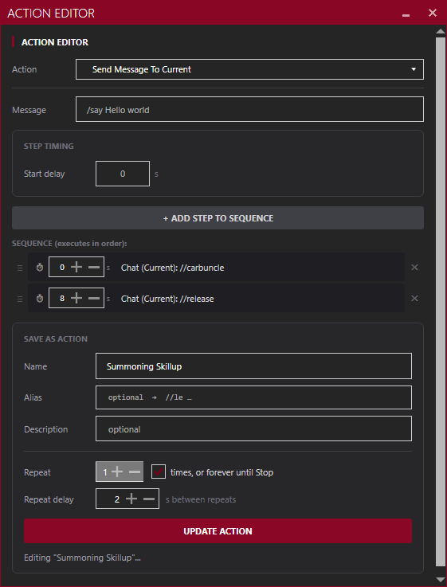
Point Warp
- Warp To Saved Point - pick from the saved-points list. Optionally zone-agnostic (matches the same point name in any zone).
- Warp To Coordinates - type X / Y / Z directly.
- Warp All Characters To Current - sync everyone to your current position.
- Warp All Characters To Specific - sync everyone to a named character's position.
- Return To Pre-Warp Position - bounce back to where you were before the most recent warp.
- Save Position - bookmark current position to an in-memory slot.
Entity Warp
- Warp To Current Target - your in-game cursor target.
- Warp To Nearest PC / NPC / Monster - closest entity matching the type filter.
- Warp To Player - pick another attached character; warps to wherever they are right now.
Speed
- Toggle Speed On/Off
- Set Speed - sets the boost percent.
- Toggle Smart Speed On/Off
- Set Smart Speed - sets the smart-speed boost percent.
Visibility
- Toggle Players On/Off
- Toggle NPCs On/Off
- Toggle Monsters On/Off
Flags & status
- Toggle None / Maintenance / GM Flag
- Toggle None / Maintenance / GM Status
Profile
- Load & Activate - picks a saved profile and applies it.
- Toggle Profile On/Off - turns the active profile off (or back on).
Chat
- Send Message To Current - sends from the focused character.
- Send Message To All - sends from every attached character.
- Send Message To Specific - sends from a named character.
Position Nudge
Move a fixed step in any of 8 compass directions plus Up / Down. Each can use the WARP ALL flag to nudge every same-zone character at once.
Per-step options
Every step in the sequence can be tuned independently:
- Delay before (ms) - wait this long before firing.
- Repeat count - fire N times.
- Repeat delay (ms) - pause between iterations.
Use these to build cast → wait → cast → wait → warp chains.
Using Actions
Actions and sequences can be saved with a name and replayed later through the following ways:
- By LesserEvil UI - select a saved Action from the list and hit RUN.
- By Hotkey - bind an action to a hotkey and execute it from there.
- By Windower Addon - register an alias for an action through the LesserEvil windower addon and initiate it through the windower command.
Registering and executing actions through the Windower addon requires the LesserEvil Windower addon to be loaded on the respective character.
Hotkey Basics
Actions can be assigned to Hotkeys for easier access and execution.
- Multi-Key Combo Support - captured by clicking the key-capture box and pressing the keys.
- Profile Scoping - optional profile scope; the hotkey only fires while that profile is loaded on the focused character.
- Action Sequence Support - single actions or actions sequences can be assigned to hotkeys.
Hotkey Scope
Hotkeys are global (the keyboard hook fires whether FFXI or another app is focused). Scoping them to a profile lets you have different bindings per character setup - e.g. a "Hunt" profile triggers tracking actions, a "Crafting" profile triggers warp-to-mog-house actions.
Other
Global settings: display, behavior, warp guard, warp group, FFXI install path, and language.
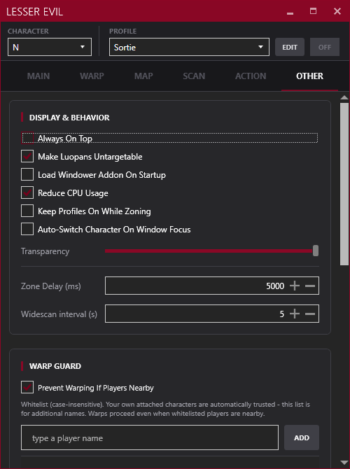
Display & Behavior
- Always On Top
- Keeps the LesserEvil window above all others applications.
- Make Luopans Untargetable
- Disables targetting for Geomancer luopans.
- Load Windower Addon On Startup
- When a new FFXI client attaches, automatically issues
//lua load LesserEvilon it so the addon connects without manual intervention. - Reduce CPU Usage
- Slows the per-character monitoring loop from ~500 ms to ~1 s and pauses background polling when the LesserEvil window isn't focused.
- Keep Profiles On While Zoning
- By default, the active profile is deactivated when any included character changes zones (a safety measure). Enable to keep profiles applied across zones.
- Auto-Switch Character On Window Focus
- Switches the focused character automatically when you focus a different FFXI game window.
- Remove JA Lock
- Removes movement lock on using JA (JA0Wait).
- Unlock All Maps Ingame
- Allows you to view all maps using
/mapas if you had acquired them normally ingame. - Transparency
- Sliders the LesserEvil window opacity from fully opaque down to translucent.
- Zone Delay
- Cooldown (ms) between successive zone-related actions.
Warp Guard
Guards every warp the app can issue depending on players nearby. When enabled (on by default), warps are blocked if a non-trusted player is within ~50 yalms of the warping character. Your own attached characters are always trusted - the whitelist is only for additional names you want to treat as safe.
- Prevent Warping If Players Nearby - master toggle. Default: on.
- Whitelist - case-insensitive list of additional trusted names. Type a name + Enter (or ADD); double-click a row or press Delete to remove.
Triggered guards display a WARP BLOCKED banner on whichever tab the warp came from (WARP, MAP, MAIN's compact warp). The banner names the blocked character and auto-dismisses after a few seconds.
Applies to every warp path: POINT/PLAYER warps, click-to-warp on the map, scan-result jumps, hotkey-bound warp actions, and addon-issued warps.
Warp Group
Per-character opt-in for "Warp All" operations. Every attached character is listed by default; uncheck a name to exclude that character from group warps issued by:
- The ALL toggle on the WARP tab.
- The Warp All Characters checkbox on the Map tab.
- Warp-related actions (see Actions & Hotkeys).
FFXI installation
LesserEvil reads zone DAT files for the entity-name lookup used by Zone Scan. The install path auto-detects from the registry; the Resolved path field shows what's currently in use.
- BROWSE… - manually pick the FFXI install folder when the registry detection fails (e.g. install on a non-default drive).
- USE AUTO-DETECT - clear a manual override and fall back to the registry-detected path.
Status text below the path explains the current state: Auto-detected from registry, Using manual override, or FFXI install not auto-detected - click Browse to set it manually.
Language
Switch between English and 日本語 at runtime; the change applies immediately.
Translations are currently pending. If you would like to contribute, please contact me.
Where Settings Live
All settings persist under the app's config/ folder:
global.json- display & behavior, warp guard toggle + whitelist, FFXI override.profiles.json- saved profiles.hotkeys.json- hotkey definitions.warpgroup.json- per-character warp opt-ins.saved.points.json- saved warp points.
Legacy Tako CLI Commands
Legacy Tako ingame commands. While these are still available in LesserEvil, they are no longer officially supported or updated.
These commands are read straight from Windower's console input by the
desktop app, so they work on any attached character independently of the
LesserEvil Windower addon. All of them use the
//pt prefix.
Most have a more user-friendly equivalent in the Warp and Actions & Hotkeys tabs.
| Command | Behavior |
|---|---|
//pt goto <t> |
Warp to your current target's position. |
//pt goto <player-name> |
Warp to another LesserEvil-attached character (gated to the same zone). |
//pt goto <entity-name> |
Fuzzy-match an entity in the current zone by name (case-insensitive). |
//pt setpos <X> <Y> <Z> |
Warp to literal coordinates. Input order is X Y Z (internally passed as SetPosition(X, Z, Y)). |
//pt showpos |
/echo your current position as X Z Y. |
//pt showpos <chatcmd> |
Sends /<chatcmd> X Z Y instead - e.g. //pt showpos p → /p X Z Y. |
//pt point <name> |
Warp to a saved warp point matched by zone + name (same data as the Warp tab's POINT dropdown). |
//pt move <dir> |
Nudge the targeted party member ~3 units. <dir> is one of nw, north, ne, east, se, south, sw, west, up, down. |
For warping to saved points, prefer the supported
//le goto command over
//pt point - same result, actively maintained, and it can
warp every same-zone character at once with all.